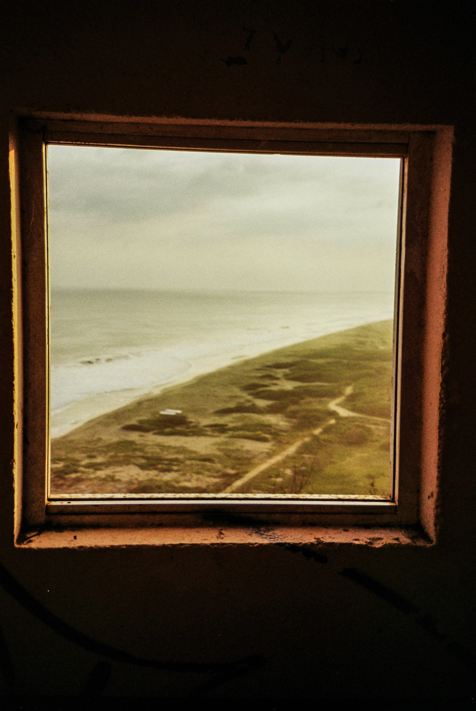

Sebastian Miller / Studio Archive
Sebastian Miller

01 / Selected work
A first look at photographs and objects concerned with place, memory, everyday life, and the traces people leave behind.
02 / Browse the archive
03 / Photography pathways
Photography as a way of understanding how places become meaningful.
04 / Objects
Objects, interiors, and handmade materials become evidence of lived experience.
05 / Print requests
Prints by request.
Selected works can be produced as archival prints in small batches. Send a request with the image title, preferred size, and delivery location. Availability, price, and production timeline are confirmed before payment or printing.
Request first. Confirm details. Produce only after approval.
No print is made automatically. This form is for interest, planning, and quoting.
8 x 10, 11 x 14, 16 x 20, or custom.
06 / About
I study how people inhabit places, and how places quietly shape memory, identity, and belonging.
My practice explores how people temporarily inhabit places and how those places, in turn, shape memory, identity, and community. I am drawn to ordinary conditions: labor, friendship, travel, celebration, routine, and the quiet encounters through which environments become meaningful.
Through photography, I look for the traces people leave behind: the objects they use, the spaces they transform, and the relationships that give ordinary places emotional weight. Rather than treating culture as a symbol, I look for it in furniture, tools, architecture, clothing, transportation, gestures, and public space.
Through woodworking and ceramics, I extend that same attention into material practice. Objects become vessels for memory: evidence of use, care, craft, and belonging.
07 / Contact